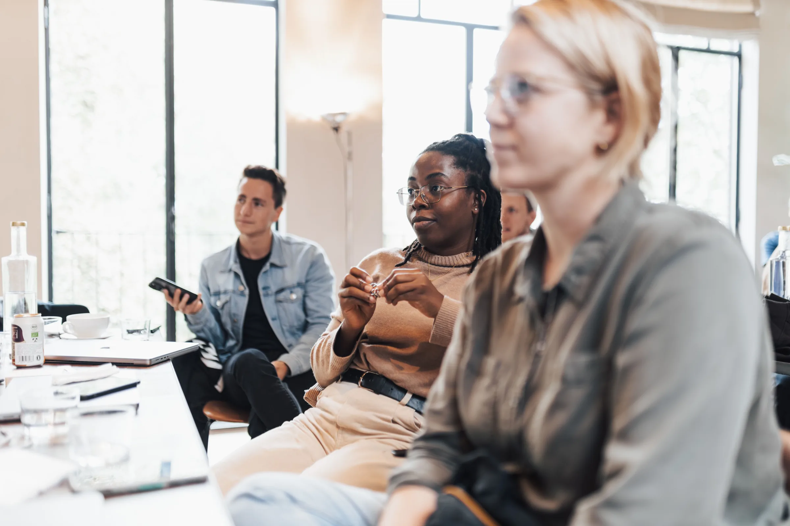

Qualitative Research Studies
End-to-end qualitative research from question framing and research design through fieldwork, analysis, and recommendations.

We design and lead focus groups, interviews, listening sessions, and message research, then turn what we learn into practical direction for policy, communications, engagement, and strategy.
Understanding what people think is only the beginning.
We design qualitative research around the decision in front of you. We uncover how people understand an issue, what shapes their choices, where trust breaks down, what messages resonate, and what institutions may be missing.
The goal is not simply more information. It is better-informed action.
Research designed around the decision in front of you, with practical direction for what happens next.
End-to-end qualitative research from question framing and research design through fieldwork, analysis, and recommendations.
Direct facilitation with the people whose perspectives need to be understood.
Research examining how language, framing, ideas, and positioning land before they go public.
Clear recommendations that turn research into decisions, messages, engagement plans, public affairs, and communications strategy.
Black communities and families; women, mothers, and caregivers; voters and civic audiences; and rural and Southern communities.
Explore Who We CenterPRC Impact's principal served as lead consultant to the 2020 referendum campaign. Today, that experience informs PRC Impact's work in community listening, issue research, messaging, coalition development, and civic strategy.
See Selected Work